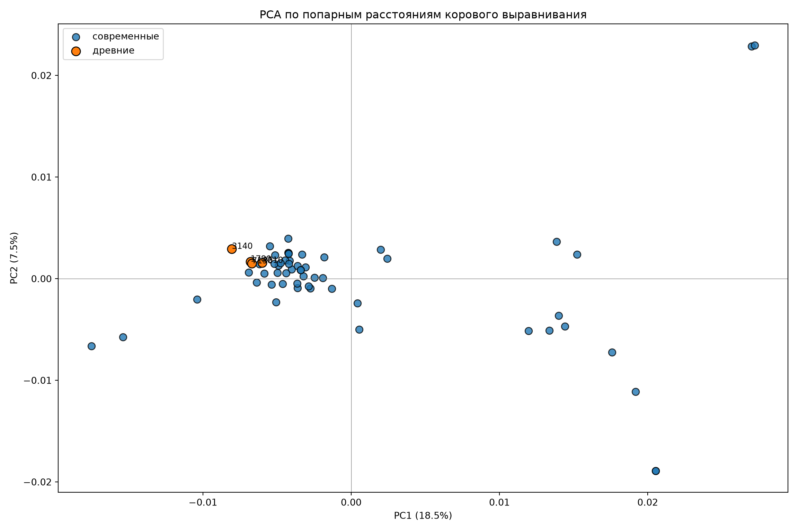

mkdir -p ../data/C_H/all_gff_no_outgroup_no_BTC_C_H
cp ../data/C_H/avaliable_gff_C_H/*.gff ../data/C_H/all_gff_no_outgroup_no_BTC_C_H/
cp ../data/C_H/new_gff_C_H/*.gff ../data/C_H/all_gff_no_outgroup_no_BTC_C_H/4 Поиск коровых генов без аутгруппы
Проаннотированные современные сборки собираются в пангеном. Древние риды выравниваются на гены этого пангенома. В общее выравнивание попадают гены, покрытые на ширину больше 80 хотя бы у одного из древних образцов.
4.1 Коровые гены современных сборок (Roary, 55 геномов)
Собираем все аннотации в одну папку для корректной работы Roary и запускаем его
mkdir -p ../data/C_H/all_core_alignment_no_outgroup_no_BTC_C_H
source ../scripts/make_core_alignment_roary.sh
roary ../data/C_H/all_gff_no_outgroup_no_BTC_C_H ../data/C_H/all_core_alignment_no_outgroup_no_BTC_C_HCore genes (80% <= strains <= 100%) 789
Soft core genes (79% <= strains < 80%) 0
Shell genes (15% <= strains < 79%) 2009
Cloud genes (0% <= strains < 15%) 6365
Total genes (0% <= strains <= 100%) 9163в core_accessory.header.embl FT feature - 527 штук, FT misc_feature - 261
4.2 Анализ выравнивания древних ридов на гены современного пангенома
Саша выравняла сырые риды древних образцов на гены из pan_genome_reference.fa. Это гены современного генома GCA_042638435.1, записанные сплошной строкой, без прочерков.
Мы посмотрим какие гены выровнены на ширину больше 80
mkdir -p ../data/C_H/all_core_alignment_no_outgroup_no_BTC_C_H/BTC_reads_coverage
for bam in ../data/C_H/all_core_alignment_no_outgroup_no_BTC_C_H/BTC_reads_alignment/*.bam; do
sample=$(basename "$bam" .pangenome_dedup.bam)
samtools index "$bam"
samtools coverage "$bam" \
| awk 'NR == 1 || $6 >= 80' \
> "../data/C_H/all_core_alignment_no_outgroup_no_BTC_C_H/BTC_reads_coverage/${sample}_coverage80.tsv"
doneТеперь мы берём их объединение: локус остаётся, если он хорошо покрыт хотя бы у одного древнего. У того древнего, где покрытия нет, в этом гене будут N.
from pathlib import Path
coverage_dir = Path("../data/C_H/all_core_alignment_no_outgroup_no_BTC_C_H/BTC_reads_coverage")
out = Path("../data/C_H/all_core_alignment_no_outgroup_no_BTC_C_H/core_with_ancient")
out.mkdir(exist_ok=True)
covered = set()
for path in sorted(coverage_dir.glob("*_coverage80.tsv")):
genes = {line.split("\t")[0] for i, line in enumerate(path.read_text().splitlines()) if i}
covered |= genes
print(f'у {path.name} - {len(genes)} хорошо покрытых генов')у 000008101780_coverage80.tsv - 4031 хорошо покрытых генов
у 000008103140_coverage80.tsv - 4011 хорошо покрытых генов
у 000008104510_coverage80.tsv - 5007 хорошо покрытых генов
у 000008107130_coverage80.tsv - 5446 хорошо покрытых геновprint("хотя бы у одного:", len(covered))хотя бы у одного: 6111_ = (out / "covered_loci.txt").write_text("\n".join(sorted(covered)) + "\n")4.3 Общее коровое выравнивание современных и древних
4.3.1 Какие из них есть в коровом выравнивании
В core_alignment_header.embl записано, где каждый ген лежит в склеенном выравнивании. Берём те, что есть в gene_presence_absence.csv и чей локус хорошо покрыт хотя бы у одного древнего.
Code
import csv
from pathlib import Path
base = Path("../data/C_H/all_core_alignment_no_outgroup_no_BTC_C_H")
roary = base / "80_percent"
out = base / "core_with_ancient"
reference_name = "GCA_042638435.1"
def read_fasta(path):
sequences, name, chunks = {}, None, []
for line in Path(path).read_text().splitlines():
if line.startswith(">"):
if name:
sequences[name] = "".join(chunks)
name, chunks = line[1:].split()[0], []
else:
chunks.append(line.strip())
if name:
sequences[name] = "".join(chunks)
return sequences
genes = []
current = None
for line in (roary / "core_alignment_header.embl").read_text().splitlines():
if line.startswith("FT feature"):
start, end = line.split()[-1].split("..")
current = {"gene": None, "start": int(start), "end": int(end)}
genes.append(current)
elif current and "/locus_tag=" in line:
current["gene"] = line.split("=", 1)[1].strip().strip('"')
locus_of = {}
with (roary / "gene_presence_absence.csv").open() as handle:
reader = csv.reader(handle)
header = next(reader)
gene_col = header.index("Gene")
ref_col = header.index(reference_name)
for row in reader:
locus_of.setdefault(row[gene_col], row[ref_col].strip())
pan_genome = read_fasta(roary / "pan_genome_reference.fa")
covered = set((out / "covered_loci.txt").read_text().split())
kept = []
for gene in genes:
locus = locus_of.get(gene["gene"], "")
if locus not in covered or locus not in pan_genome:
continue
kept.append((gene["gene"], locus, gene["start"], gene["end"], len(pan_genome[locus])))
print("генов в выравнивании:", len(genes))
print("берём:", len(kept))
lines = ["gene\tlocus\talignment_start\talignment_end\tcontig_length"]
bed = []
for gene, locus, start, end, length in kept:
lines.append(f"{gene}\t{locus}\t{start}\t{end}\t{length}")
bed.append(f"{locus}\t0\t{length}")
_ = (out / "genes_kept.tsv").write_text("\n".join(lines) + "\n")
_ = (out / "genes_kept.bed").write_text("\n".join(bed) + "\n")генов в выравнивании: 527 берём: 481
4.3.2 Консенсус древних по этим генам
Консенсус считает ANGSD. На отобранных генах глубина 10–30×, поэтому -doFasta 2: в позиции берётся самая частая буква среди ридов.
Случайная буква (-doFasta 1) нужна, когда на позицию приходится один рид, здесь так почти нет.
BED=../data/C_H/all_core_alignment_no_outgroup_no_BTC_C_H/core_with_ancient/genes_kept.bed
DIR=../data/C_H/all_core_alignment_no_outgroup_no_BTC_C_H/BTC_reads_alignment
for bam in "$DIR"/*.bam; do
sample=$(basename "$bam" .pangenome_dedup.bam)
samtools depth -a -b "$BED" "$bam" | awk -v s="$sample" '
{ n++; sum += $3; if ($3 >= 10) d10++ }
END { printf "%s позиций %d средняя глубина %.1f доля >=10x %.1f%%\n", s, n, sum/n, 100*d10/n }
'
done000008101780 позиций 405339 средняя глубина 15.9 доля >=10x 71.9%
000008103140 позиций 402822 средняя глубина 14.2 доля >=10x 51.1%
000008104510 позиций 405339 средняя глубина 26.0 доля >=10x 84.9%
000008107130 позиций 405339 средняя глубина 35.7 доля >=10x 89.8%-minMapQ 20 и -minQ 20 отбрасывают слабые риды и слабые буквы. Файл pan_genome_reference.fa задаёт имена и длины генов.
Список регионов для ANGSD — те же гены, что в genes_kept.bed, но координаты с 1 и конец включительно. Сам вызов — scripts/create_angsd_consensus.sh.
base=$(cd ../data/C_H/all_core_alignment_no_outgroup_no_BTC_C_H && pwd)
out="$base/core_with_ancient"
mkdir -p "$out/consensus"
awk -F '\t' '{print $1 "\t1\t" $3}' "$out/genes_kept.bed" > "$out/angsd_regions.txt"
source ../scripts/create_angsd_consensus.sh
for bam in "$base/BTC_reads_alignment"/*.bam; do
sample=$(basename "$bam" .pangenome_dedup.bam)
echo "$bam" > "$out/consensus/${sample}.bamlist"
create_consensus_angsd \
"$out/consensus/${sample}.bamlist" \
"$base/80_percent/pan_genome_reference.fa" \
"$out/consensus/${sample}" \
"$out/angsd_regions.txt"
echo "$sample $(grep -c '^>' "$out/consensus/${sample}.fa") генов"
done4.3.3 Вставка консенсуса в выравнивание
У современных штаммов из выравнивания вырезаются те же гены. У древнего идём по строке GCA_042638435.1: на букве берём следующую букву консенсуса ANGSD, на прочерке ставим прочерк. Консенсус уже той же длины, что ген без прочерков. Если букв не хватило, остаток позиции заполняется n.
Code
from pathlib import Path
base = Path("../data/C_H/all_core_alignment_no_outgroup_no_BTC_C_H")
roary = base / "80_percent"
out = base / "core_with_ancient"
reference_name = "GCA_042638435.1"
def read_fasta(path):
sequences, name, chunks = {}, None, []
for line in Path(path).read_text().splitlines():
if line.startswith(">"):
if name:
sequences[name] = "".join(chunks)
name, chunks = line[1:].split()[0], []
else:
chunks.append(line.strip())
if name:
sequences[name] = "".join(chunks)
return sequences
alignment = read_fasta(roary / "core_gene_alignment.aln")
reference = alignment[reference_name]
kept = [
line.split("\t")
for line in (out / "genes_kept.tsv").read_text().splitlines()[1:]
]
ancient = {
path.stem: read_fasta(path)
for path in sorted((out / "consensus").glob("*.fa"))
}
pieces = {name: [] for name in list(alignment) + list(ancient)}
for gene, locus, start, end, length in kept:
start, end = int(start) - 1, int(end)
ref_row = reference[start:end]
for name, sequence in alignment.items():
pieces[name].append(sequence[start:end])
for sample, contigs in ancient.items():
consensus = contigs.get(locus)
if consensus is None:
raise SystemExit(f"в консенсусе {sample} нет гена {locus}")
if len(consensus) != int(length):
print(sample, locus, "длина консенсуса", len(consensus), "длина гена", length)
placed = []
i = 0
for base in ref_row:
if base == "-":
placed.append("-")
continue
if i >= len(consensus):
placed.append("n")
continue
letter = consensus[i].lower()
i += 1
placed.append("-" if letter == "*" else letter)
pieces[sample].append("".join(placed))
order = list(alignment) + list(ancient)
lines = []
for name in order:
sequence = "".join(pieces[name])
lines.append(f">{name}")
lines.extend(sequence[i:i + 60] for i in range(0, len(sequence), 60))
_ = (out / "core_gene_alignment_with_ancient.aln").write_text("\n".join(lines) + "\n")
print(len(order), "последовательностей,", len("".join(pieces[order[0]])), "позиций")59 последовательностей, 470290 позиций4.3.4 PCA: не выбиваются ли древние
Для каждой пары образцов берём только позиции, где у обоих стоит A, C, G или T. Расстояние — доля позиций, в которых буквы различаются. Прочерк и N в долю не входят. Координаты считаем так, чтобы близкие на графике образцы были близки по этой доле.
Code
from pathlib import Path
import numpy as np
import matplotlib.pyplot as plt
aln_path = Path("../data/C_H/all_core_alignment_no_outgroup_no_BTC_C_H/core_with_ancient/core_gene_alignment_with_ancient.aln")
sequences = {}
name = None
chunks = []
for line in aln_path.read_text().splitlines():
if line.startswith(">"):
if name:
sequences[name] = "".join(chunks)
name = line[1:].split()[0]
chunks = []
else:
chunks.append(line.strip())
sequences[name] = "".join(chunks)
names = list(sequences)
alignment = np.array([list(sequences[sample].upper()) for sample in names])
is_base = np.isin(alignment, list("ACGT"))
n_samples = len(names)
distance = np.zeros((n_samples, n_samples))
for i in range(n_samples):
for j in range(i + 1, n_samples):
both = is_base[i] & is_base[j]
n_diff = np.count_nonzero(both & (alignment[i] != alignment[j]))
distance[i, j] = distance[j, i] = n_diff / both.sum()
centering = np.eye(n_samples) - np.ones((n_samples, n_samples)) / n_samples
gram = -0.5 * centering @ (distance ** 2) @ centering
eigenvalues, eigenvectors = np.linalg.eigh(gram)
order = np.argsort(eigenvalues)[::-1]
eigenvalues = eigenvalues[order]
eigenvectors = eigenvectors[:, order]
scores = eigenvectors[:, :2] * np.sqrt(np.clip(eigenvalues[:2], 0, None))
explained = eigenvalues[:2] / eigenvalues[eigenvalues > 0].sum() * 100
ancient = [i for i, sample in enumerate(names) if sample.startswith("00000")]
modern = [i for i in range(n_samples) if i not in ancient]
plt.figure(figsize=(12, 8))<Figure size 1200x800 with 0 Axes>Code
plt.scatter(scores[modern, 0], scores[modern, 1], s=60, alpha=0.8, edgecolor="k", label="современные")<matplotlib.collections.PathCollection object at 0x119a5d2b0>Code
plt.scatter(scores[ancient, 0], scores[ancient, 1], s=90, edgecolor="k", label="древние")<matplotlib.collections.PathCollection object at 0x110919450>Code
for i in ancient:
plt.annotate(names[i][-4:], (scores[i, 0], scores[i, 1]), fontsize=9)Text(-0.0067921463842458485, 0.0016779239549169216, '1780')
Text(-0.008046727994156221, 0.002933745151376979, '3140')
Text(-0.005992435884124464, 0.0015556893362351234, '4510')
Text(-0.006693269440565547, 0.001504520727336218, '7130')Code
plt.xlabel(f"PC1 ({explained[0]:.1f}%)")Text(0.5, 0, 'PC1 (18.5%)')Code
plt.ylabel(f"PC2 ({explained[1]:.1f}%)")Text(0, 0.5, 'PC2 (7.5%)')Code
plt.title("PCA по попарным расстояниям корового выравнивания")Text(0.5, 1.0, 'PCA по попарным расстояниям корового выравнивания')Code
plt.axhline(0, color="grey", lw=0.5)<matplotlib.lines.Line2D object at 0x119a5da90>Code
plt.axvline(0, color="grey", lw=0.5)<matplotlib.lines.Line2D object at 0x119a5dd30>Code
plt.legend()<matplotlib.legend.Legend object at 0x119a5de80>Code
plt.tight_layout()
out = Path("../results/figures/PCA_core_with_ancient.png")
out.parent.mkdir(parents=True, exist_ok=True)
plt.savefig(out, dpi=150)
plt.show()